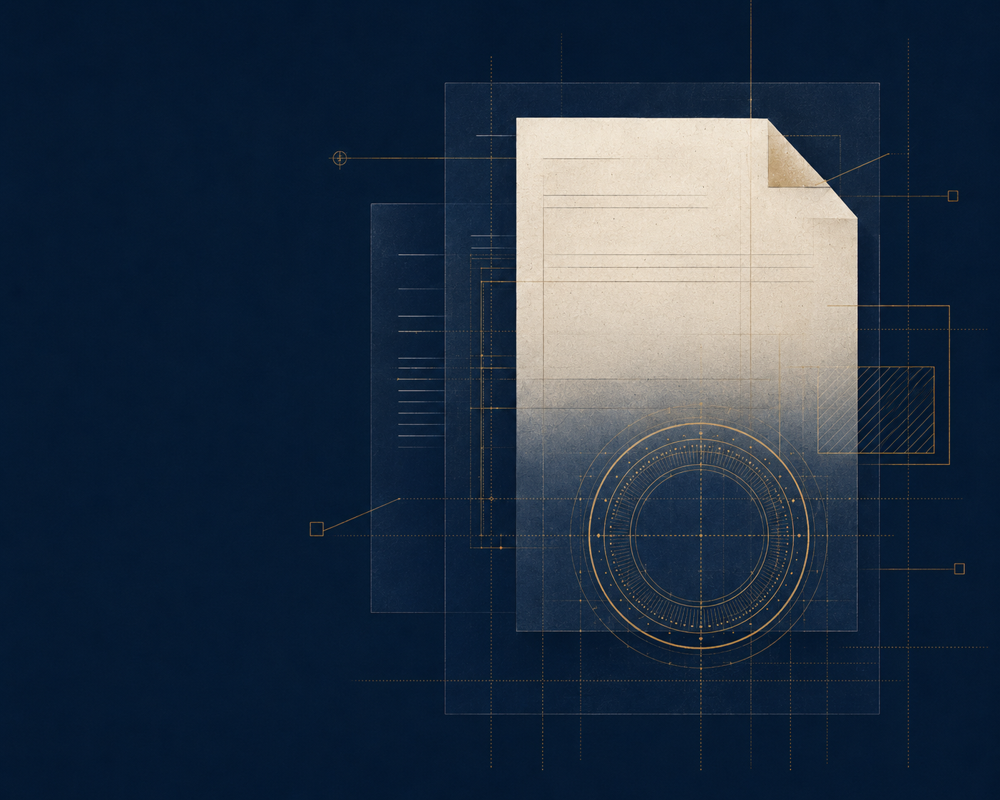
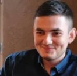

СКТЭ · КТЭ · ЭВМ · ПО
Компьютерно-техническая
Судебная и досудебная компьютерно-техническая экспертиза программ, исходного кода, устройств, информационных систем, баз данных и цифровых следов.
ПодробнееСудебная экспертиза · по всей России
Родион Стрелков — судебный эксперт, выпускник МГТУ им. Н. Э. Баумана. Компьютерно-технические, фототехнические, лингвистические, товароведческие и другие исследования для суда, бизнеса и частных лиц.


Направления
Не нужно заранее определять вид экспертизы. Опишите ситуацию — помогу отделить технические вопросы от правовых и определить, какие специальные знания требуются.
Судебная и досудебная компьютерно-техническая экспертиза программ, исходного кода, устройств, информационных систем, баз данных и цифровых следов.
ПодробнееИсследование дат, метаданных, структуры и признаков изменения электронных документов, таблиц, писем, архивов, изображений и иных файлов.
ПодробнееФиксация и исследование содержания, структуры, функциональности, исходных материалов и истории сайтов для судебных и договорных споров.
ПодробнееИсследование фото- и видеозаписей на признаки монтажа, редактирования, генерации, изменения структуры и пригодность для решения поставленных задач.
ПодробнееКомплексный анализ цифровых материалов на признаки применения генеративных моделей, нейросетевой обработки и алгоритмов машинного обучения.
ПодробнееИсследование высказываний в публикациях, переписке, документах, аудио- и видеоматериалах: смысл, форма выражения и речевые признаки.
ПодробнееФормат результата
Форма работы зависит от стадии спора и того, кем поставлены вопросы.
Проводится на основании определения суда. Эксперт исследует представленные объекты, отвечает на вопросы и оформляет заключение в процессуальном порядке.
Как назначить экспертизуДосудебное исследование по договору. Используется для претензии, переговоров, подготовки позиции, обращения в суд или приобщения в качестве письменного доказательства.
Что подготовитьПроверка чужого экспертного заключения: компетенция, объекты, методика, полнота исследования, логика и соответствие выводов фактическим результатам.
О рецензированииЭксперт и практика
Исследование проводит и заключение подписывает Стрелков Родион Александрович — судебный эксперт с профильным высшим образованием МГТУ им. Н. Э. Баумана.
Образование и компетенцииСтандарт заключения
Статья 25 Федерального закона № 73-ФЗ предусматривает отражение объектов и материалов, содержания исследования, применённых методов, оценки результатов и обоснованных выводов. Иллюстрации являются составной частью заключения.
Что должно быть в заключении«Оценка результатов исследования, обоснование и формулировка выводов по поставленным вопросам.Федеральный закон № 73-ФЗ, статья 25
Порядок работы
Формат определяется объектом: цифровые материалы можно передать онлайн, а товары и оборудование при необходимости осматриваются очно.
Кратко описываете ситуацию, цель и направляете основные материалы.
Проверяю разрешимость вопросов, состав объектов, срок и стоимость.
Фиксирую объекты, применяю методы, документирую промежуточные результаты.
Получаете подписанный документ с исследованием, иллюстрациями и выводами.
Практика
Без раскрытия сторон и конфиденциальных обстоятельств.
База знаний
Подробные материалы о вопросах эксперту, цифровых доказательствах, назначении исследования и проверке заключения.
Разбираем основания проведения, статус документа, порядок постановки вопросов и практические различия между судебной экспертизой и заключением специалиста.
ЧитатьПрактический порядок подготовки нейтральных, технически разрешимых вопросов без правовой оценки и заранее заданного ответа.
ЧитатьСостав комплекта зависит от направления исследования, но всегда важны происхождение объектов, исходный формат и связь с материалами дела.
ЧитатьСкриншот показывает только внешний вид, тогда как исходный файл содержит структуру, метаданные и технические признаки, необходимые для проверки.
ЧитатьВопросы
Формат зависит от объекта и поставленных вопросов. Цифровые материалы можно передать онлайн, а физический осмотр проводится, когда вывод зависит от состояния устройства, товара или оборудования.
Кратко опишите спор и цель исследования, приложите вопросы суда или ваши предполагаемые вопросы, основные документы и исходные цифровые файлы. На первом этапе достаточно материалов, позволяющих понять объект и объём работы.
Заключение специалиста готовится по инициативе стороны на основании договора. Судебная экспертиза назначается определением суда, а эксперт предупреждается об ответственности и отвечает на вопросы в установленном процессуальном порядке.
Да. Вопросы проверяются на относимость к специальным знаниям, техническую разрешимость и отсутствие правовой оценки. При необходимости предлагается нейтральная редакция без изменения цели исследования.
От количества объектов и вопросов, объёма данных, необходимости осмотра, состояния исходных материалов, сложности методики и срочности. Точные условия указываются после предварительного ознакомления.
Предварительная оценка
Направьте материалы и предполагаемые вопросы. Сообщу, возможно ли исследование, что потребуется, срок и стоимость.